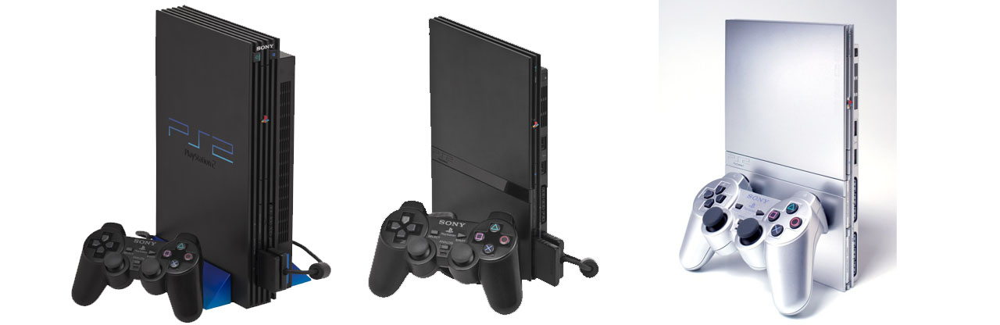
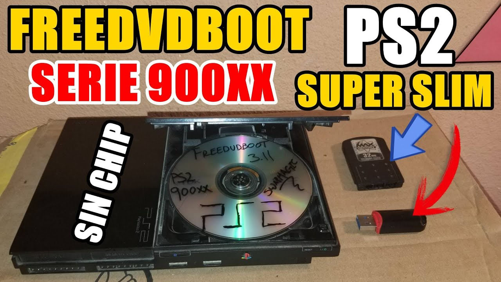
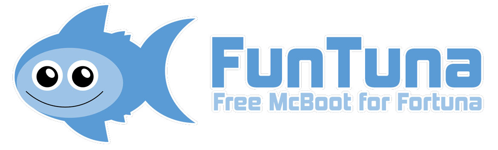
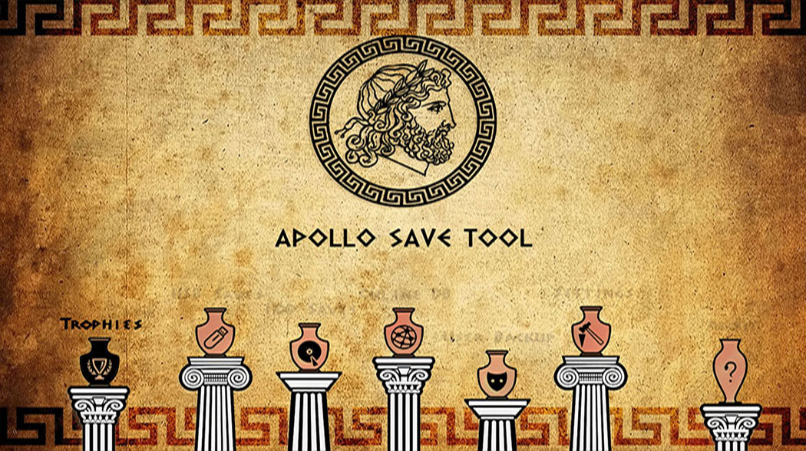
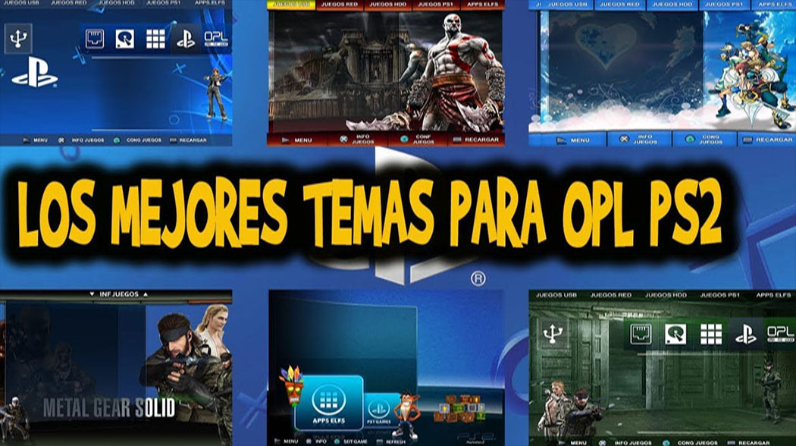
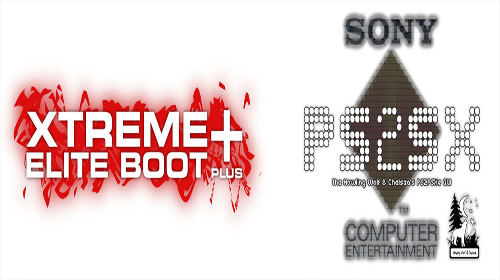
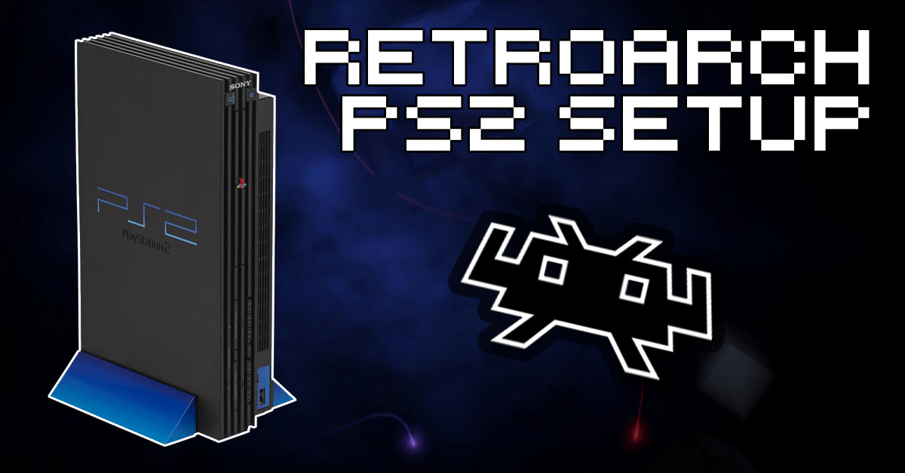
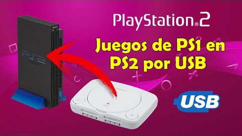
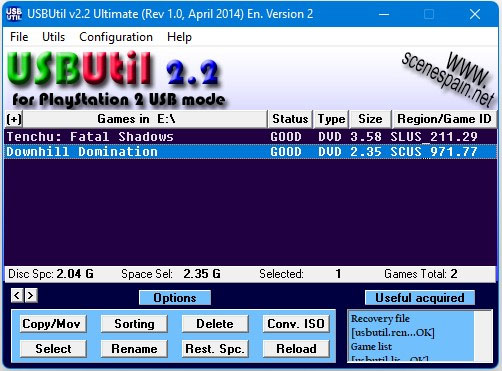
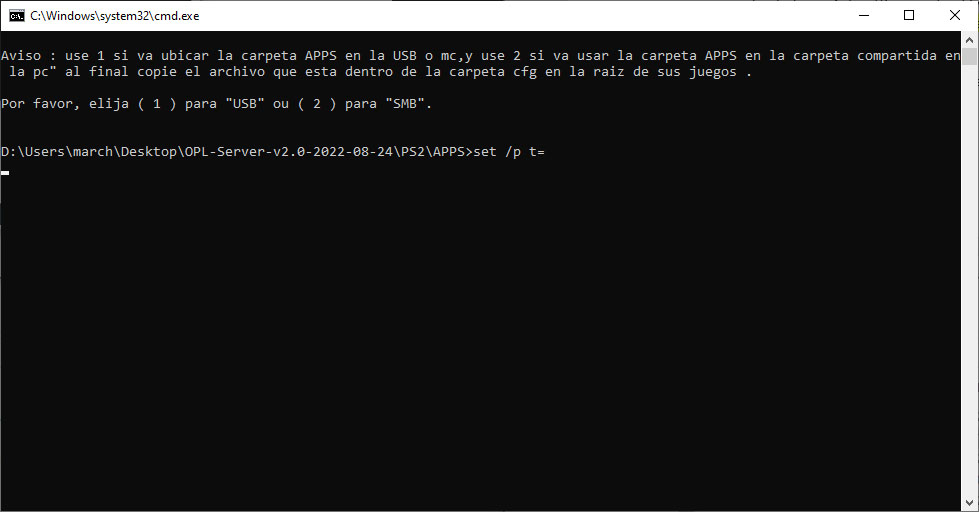

Información de PS2
Algunos de los aplicaciones o ayuda que mostramos a continuación son más que nada para ayudar con algunas necesidades que se presenten.
Nos puede recomendar algunos programas o aplicaciones para subir a nuestra WEB o si encuentra algún problema con algunos links o comandos le agradecemos informar para mantener esta página activa. igual todos los comandos y los link fueron actualizados el 03-09-2022.
Desbloqueo por Memoria
FreeDVDBoot
 @Cturt ha publicado un nuevo exploit llamado FDVDB (FreeDVDBoot) que se incia en el reproductor de DVD de la consola y nos permite grabar nuestros propios discos caseros de PlayStation 2 y reproducirlos en una consola sin chip "no modificada". Con uLaunchELF como programa inicial, los usuarios pueden incluir múltiples programas homebrew en el mismo disco si se desea. Este nuevo exploit es el más fácil para poder crear una memory card con Fortuna o FMBC (FreeMCBoot) y jugar desde un USB.
Archivos Para descargar
| Archivos | Servidores | |
|---|---|---|
| FreeDVDBoot | Mega | WEB Oficial |
Free Memory Card Boot
 Free Memory Card Boot (FMCB) es un software casero que está diseñado para configurar su consola PlayStation 2 y brindarle un medio para iniciar el software casero, sin necesidad de hardware adicional, modificaciones a su consola o trucos peligrosos como el intercambio legendario.
Free Memory Card Boot (FMCB) es un software casero que está diseñado para configurar su consola PlayStation 2 y brindarle un medio para iniciar el software casero, sin necesidad de hardware adicional, modificaciones a su consola o trucos peligrosos como el intercambio legendario.
Archivos Para descargar
| Archivos | Servidores | |
|---|---|---|
| Free Memory Card Boot(FMCB) | Mega | WEB Oficial |
FunTuna
 FunTuna es una compilación de homebrew existentes editados. Incluye versiones personalizadas de Fortuna , Free McBoot , uLaunchELF y Free McBoot Configurator . Todos ellos editados para que funcionen solo desde "mc0:/BOOT/" y edita las marcas de tiempo de esa carpeta de nuevo a "2099-12-31 23:59:59" cuando se edita algo dentro. Además, el FMCB utilizado en FunTuna es un ELF independiente , no una actualización de OSDSYS, lo que significa que puede copiarlo de una tarjeta de memoria a otra y funcionará .
Archivos Para descargar
| Archivos | Servidores | |
|---|---|---|
| FunTuna | Mega | WEB Oficial |
Hombrew - Extenciones
Open PS2 Loader
 Open PS2 Loader (OPL) es un cargador de aplicaciones y juegos 100 % de código abierto para las unidades PS2 y PS3. Es compatible con tres categorías de dispositivos: dispositivos de almacenamiento masivo USB, recursos compartidos SMB y la unidad HDD de PlayStation 2. Los dispositivos USB y los recursos compartidos SMB admiten los formatos USBExtreme y *.ISO, mientras que el HDD de PS2 admite el formato HDLoader; todos los dispositivos también admiten el formato ZSO (ISO comprimido). Ahora es el cargador homebrew más compatible.
Open PS2 Loader (OPL) es un cargador de aplicaciones y juegos 100 % de código abierto para las unidades PS2 y PS3. Es compatible con tres categorías de dispositivos: dispositivos de almacenamiento masivo USB, recursos compartidos SMB y la unidad HDD de PlayStation 2. Los dispositivos USB y los recursos compartidos SMB admiten los formatos USBExtreme y *.ISO, mientras que el HDD de PS2 admite el formato HDLoader; todos los dispositivos también admiten el formato ZSO (ISO comprimido). Ahora es el cargador homebrew más compatible.
Archivos Para descargar
| Archivos | Servidores | |
|---|---|---|
| Open PS2 Loader | Mega | WEB Oficial |
Pack de Apps
 A continuación le traigo una pack de aplicaciones para PS2, Aplicaciones (Conjunto de Apps) contiene muchas aplicaciones de todas las versiones disponibles en MEGAPACK DE APPS PS2 es llegar y colocar en nuestra USB o RED con sus instrucciones dentro para cualquiera de los dos casos.
A continuación le traigo una pack de aplicaciones para PS2, Aplicaciones (Conjunto de Apps) contiene muchas aplicaciones de todas las versiones disponibles en MEGAPACK DE APPS PS2 es llegar y colocar en nuestra USB o RED con sus instrucciones dentro para cualquiera de los dos casos.
PS2 Apollo Save Tool
Apollo Save Tool es una aplicación para administrar archivos de partidas guardadas, trofeos y licencias en PlayStation 2.
Archivos Para descargar
| Archivos | Servidores | |
|---|---|---|
| PS2 Apollo Save Tool | Mega | WEB Oficial |
PS2 Temas OPL
Estos temas se lo puede ejecutar de manera de Open Ps2 Loeader ya que consta con la similitud de ejecutar los temas que ustedes mas le gusta como lo menciona el vídeo para darle un mejor aspecto mas llamativo y con un menú especial para ejecutar juegos de PS2, DISCO DURO O RED, a través de la carpeta THM.
Archivos Para descargar
| Archivos | Servidores |
|---|---|
| Pack de TemasOPL | Mega |
PS2 XtremeEliteBoot + PS2SX
Este proyecto comenzó como un paquete de aplicaciones compatible con Noob que incluía y vinculaba varias aplicaciones como OPL, SMS y un gestor de arranque e interfaz propios para la PS2 llamado "XtremeEliteBoot (XEB)". XEB+ le permite mejorar fácilmente su interfaz mediante complementos y también le permite ejecutar programas basados en LUA en ella. Viene con un ejemplo para probar tu controlador y un "juego en un tema" para mostrarlo.
Emuladores y Retro
Retroarch
RetroArch es una interfaz para emuladores, motores de juegos y reproductores multimedia. Le permite ejecutar juegos clásicos en una amplia gama de computadoras y consolas a través de su elegante interfaz gráfica. Los ajustes también están unificados, por lo que la configuración se realiza de una vez por todas. ¡RetroArch tiene funciones avanzadas como sombreadores, netplay, rebobinado, tiempos de respuesta del siguiente cuadro, runahead, traducción automática, funciones de accesibilidad ciega y más!
Archivos Para descargar
| Archivos | Servidores | |
|---|---|---|
| Retroarch | Mega | WEB Oficial |
PSX a PS2
Podemos cargar juegos de PSX en nuestra PS2 desde un USB o desde una PC con esta sencilla aplicación en la cual tendremos 2 (se recomienda PS1 Emulator) y se añadieron las BIOS correspondiente
Archivos Para descargar
| Archivos | Servidores | |
|---|---|---|
| PSX a PS2 | Mega | WEB Oficial |
Apps para PC
OPL Manager
 Como su nombre indica OPL Manager es un Fantástico adinistrador de juegos con muchas herramientas. Sin duda alguna tienes que tener este programa en tu ordenador si deseas tener tus juegos con todos los detalles posibles. Además permite conversión de juegos y un sin fin más de posibilidades.
Como su nombre indica OPL Manager es un Fantástico adinistrador de juegos con muchas herramientas. Sin duda alguna tienes que tener este programa en tu ordenador si deseas tener tus juegos con todos los detalles posibles. Además permite conversión de juegos y un sin fin más de posibilidades.
Archivos Para descargar
| Archivos | Servidores | |
|---|---|---|
| OPL Manager | Mega | WEB Oficial |
OPL SERVER
 Esta aplicación hace un servidor samba local con protocolo SMBv1 (listo para OPL), sin necesidad de cambiar ninguna configuración de Windows o exponer su computadora a un riesgo de ataque.Es un servidor totalmente independiente, que funciona en un puerto personalizado de su preferencia (que debe seleccionar en OPL más adelante), por lo que no interfiere ni cambia ninguna configuración de Windows o el servidor Windows Samba/CIFS nativo.
Esta aplicación hace un servidor samba local con protocolo SMBv1 (listo para OPL), sin necesidad de cambiar ninguna configuración de Windows o exponer su computadora a un riesgo de ataque.Es un servidor totalmente independiente, que funciona en un puerto personalizado de su preferencia (que debe seleccionar en OPL más adelante), por lo que no interfiere ni cambia ninguna configuración de Windows o el servidor Windows Samba/CIFS nativo.
Archivos Para descargar
| Archivos | Servidores | |
|---|---|---|
| OPL SERVER | Mega | WEB Oficial |
USBUTIL
USBUtil, nos encontramos con una estupenda herramienta gratuita, con la que manipular y crear juegos para poder ejecutarlos con las aplicaciones USBExtreme o USBAdvance en PlayStation 2. Dicho de otro modo, se trata de una aplicación con la que crear copias de seguridad de tus juegos de PlayStation 2 (PS2) en formato ISO y ejecutarlos a través de una memoria USB.
Archivos Para descargar
| Archivos | Servidores |
|---|---|
| USBUTIL | Mega |
APPS En USB
Modo APPS de nuestro USB o Servidor con aplicaciones automáticas para nuestra consola PS2 bien explicado
Archivos Para descargar
| Archivos | Servidores |
|---|---|
| APPS USB | Mega |